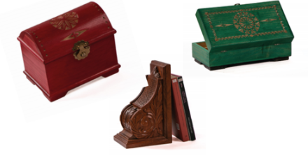
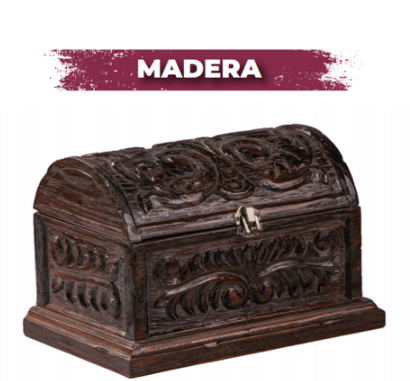
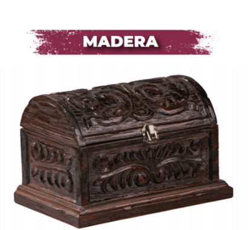

Madera
Madera y Maqueteria
El arte e imaginación son dos herramientas que
nuestros artesanos necesitan para crear bellas imagenes y figuras
talladas en madera, intercalando diversas
chapas cuyos tonos son llamativos a nuestra vista, detallados con una calidad inigualable. Se puede crear
carritos de madera, cajas y muebles .

 
